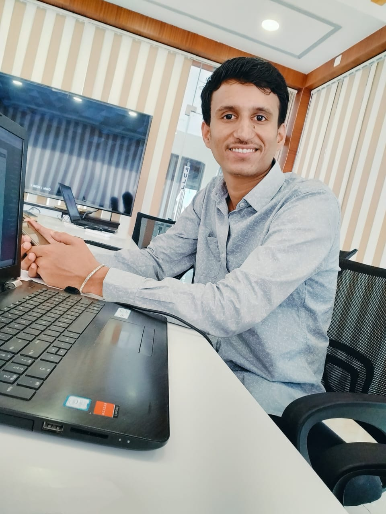

Shashi Ranjan

About Me
Dedicated and Organised Software Support Executive with 2+ years of
experience and track record of meaningful contribution in java &
SAP at large scale Commercial Project. Eager to learn effective
skills, monitoring system-flow, maintaining and completing client
Requirements.
Education Background
Govt. Engineering College, Ajmer
BTECH in Computer Science
Batch of 2017-21
(65%)
12th (Senior Secondary Examination)
Bihar School Examination Board
Completed in 2016
(69.4%)
10th (Secondary Examination)
Central Board of Secondary Education
Completed in 2014
(8.4 CGPA)
Professional Experience
JRS INNOVATION LLC, Support Facilitator
AUG2021 - Present Key
- Conduct UI tests and optimize
performance of the Application
- Also wrote Various Vlogs
for the Company using HTML
- Provide training and Support to other
team members & also deals with
technical designs team for the
smooth Execution of Customized
Software Solution
- Worked as a Software tester for the
Project named "HVI and FORUM
RKD Construction PVT. LTD, Project lead Consultant
2022 - Present
- Monitoring the System, analyze System
glitches and provides Software
trainning session for the users
- Performs a lead Consultant role for
the Project named "Heavy Vehicle
inspection" A cloud-storage fleet maintenance
software work as planning-execution-control
System, which helps to Reduce Fleet
downtime, extend assets lifetime and
increase their Productivity
- Had an experience of working parallelly over
Client office, implementing project,
Customize the System as per their Requirements.
- Extracts daily basis Assets utilization
Report with detailed information regarding
Fuel consumptions & running hmr/kmr.
Skills
Hard skills
- Programming Skills alike C, C++, HTML, CSS, Java-Script.
- SAP - PM & MM Module
- Microsoft Excel
- Database Management
Soft skills
- Communication Skills
- Project Management
- Teamwork & Leadership
- Problem Solving
Achievements
jun-july2019
Android App Development, Worked on
a project named "IBOOK" using
Android. Successfully Completed
6 Weeks Internship and Awarded
by a Certificate
Others
Contact me
© Shashi Ranjan. All rights reserved.